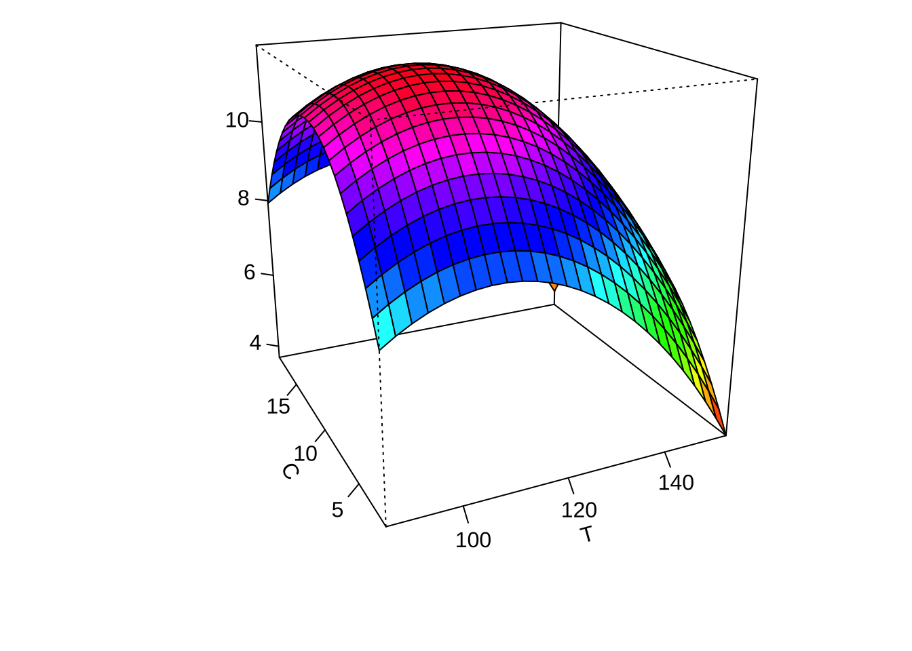

제 6 장 이차반응표면분석 사례
6.1 개요
- 교과서 9.6 절의 반응표면분석 사례 예제
- 교과서에서는
Design Expert프로그램을 사용하였지만 본 강의노트에서는R의rsm패키지를 사용하여 사례 분석
6.2 실험의 목적과 개요
빵을 포장하는 비닐 봉지의 접착력 \(y\) 을 가장 크게 하는 마감 공정의 조건을 찾는 실험을 수행하려고 한다. 실험에서 고려하는 반응변수 \(y\) 는 접착력이고 설명변수는 3개를 고려하는데 변수의 정의, 고려하는 범위와 변환식는 다음과 같다.
| 독립변수 이름 | 설명(단위) | 관심 범위 | 상자점 \((-1,1)\) 변환식 |
|---|---|---|---|
T |
마감온도(섭씨 온도) | (100, 140) | \(x_1 = (T-120)/20\) |
C |
냉각온도(섭씨 온도) | (5, 15) | \(x_2 = (C-10)/5\) |
P |
폴리 에틸렌 첨가제의 양(%) | (0.5, 1.7) | \(x_2 = (P-1.1)/(0.6)\) |
반응표면분석은 다음과 같은 2차 모형을 고려하여 접착력을 최대로 하는 최적점을 찾으려고 한다.
\[\begin{equation} y = \beta_0 + \sum_{i=1}^{3} \beta_i x_i + \sum_{i=1}^{3} \beta_{ii} x^2_i + \sum_{i=1}^{2} \sum_{j=i+1}^3 \beta_{ij} x_i x_j +e \tag{6.1} \end{equation}\]
다음은 반응표면분석을 위한 패키지 rsm 에서 함수 rsm()을 이용하여 1차 또는 2차 다항모형을 적합하는 경우 사용되는 모형식의 종류와 설명이다.
| 모형식 | 설명 | 사용의 예 | 식 |
|---|---|---|---|
FO |
first-order, 1차 다항식 | FO(x1, x2, x3) |
\(\sum_{i=1}^{3} \beta_i x_i\) |
TWI |
two-way interaction, 두 변수의 상호작용 | TWI(x1,x2) |
\(\sum_{i=1}^{2} \sum_{j=i+1}^3 \beta_{ij} x_i x_j\) |
PQ |
pure quadratic , 제곱항 | PQ(x1) |
\(\sum_{i=1}^{3} \beta_{ii} x^2_i\) |
SO |
second-order, 2차 다항식 | SO(x1, x2, x3) |
all terms |
6.3 중심합성설계의 실험점 생성
설명변수(요인)의 개수가 3개이며 회전가능한 중심합성설계를 사용한 실험점은
다음과 같이 ccd() 함수로 구할 수 있다.
ccd()함수에서 독립 변수의 변환식을 지정할 수 있으며 실험점이 원래 변수(T,C,P)의 값으로 표시된다.- 중심점에서 6개의 실험을 하려고 한다.
ccd()함수는 지정된n0값보다 2배의 실험점을 생성하기 때문에n0 = 6를 사용하고 마지막 6개의 중심점을 제거하였다.
mydesign0 <- ccd(3, n0 = 6, alpha = "rotatable", randomize = F, coding =list(x1 ~ (T - 120)/20, x2 ~ (C - 10)/5, x3 ~ (P-1.1)/0.6))
mydesign0## run.order std.order T C P Block
## 1 1 1 100.000000 5.0000000 0.500000000 1
## 2 2 2 140.000000 5.0000000 0.500000000 1
## 3 3 3 100.000000 15.0000000 0.500000000 1
## 4 4 4 140.000000 15.0000000 0.500000000 1
## 5 5 5 100.000000 5.0000000 1.700000000 1
## 6 6 6 140.000000 5.0000000 1.700000000 1
## 7 7 7 100.000000 15.0000000 1.700000000 1
## 8 8 8 140.000000 15.0000000 1.700000000 1
## 9 9 9 120.000000 10.0000000 1.100000000 1
## 10 10 10 120.000000 10.0000000 1.100000000 1
## 11 11 11 120.000000 10.0000000 1.100000000 1
## 12 12 12 120.000000 10.0000000 1.100000000 1
## 13 13 13 120.000000 10.0000000 1.100000000 1
## 14 14 14 120.000000 10.0000000 1.100000000 1
## 15 1 1 86.364143 10.0000000 1.100000000 2
## 16 2 2 153.635857 10.0000000 1.100000000 2
## 17 3 3 120.000000 1.5910358 1.100000000 2
## 18 4 4 120.000000 18.4089642 1.100000000 2
## 19 5 5 120.000000 10.0000000 0.090924302 2
## 20 6 6 120.000000 10.0000000 2.109075698 2
## 21 7 7 120.000000 10.0000000 1.100000000 2
## 22 8 8 120.000000 10.0000000 1.100000000 2
## 23 9 9 120.000000 10.0000000 1.100000000 2
## 24 10 10 120.000000 10.0000000 1.100000000 2
## 25 11 11 120.000000 10.0000000 1.100000000 2
## 26 12 12 120.000000 10.0000000 1.100000000 2
##
## Data are stored in coded form using these coding formulas ...
## x1 ~ (T - 120)/20
## x2 ~ (C - 10)/5
## x3 ~ (P - 1.1)/0.6mydesign <- mydesign0[1:20,3:5]
mydesign## T C P
## 1 100.000000 5.0000000 0.500000000
## 2 140.000000 5.0000000 0.500000000
## 3 100.000000 15.0000000 0.500000000
## 4 140.000000 15.0000000 0.500000000
## 5 100.000000 5.0000000 1.700000000
## 6 140.000000 5.0000000 1.700000000
## 7 100.000000 15.0000000 1.700000000
## 8 140.000000 15.0000000 1.700000000
## 9 120.000000 10.0000000 1.100000000
## 10 120.000000 10.0000000 1.100000000
## 11 120.000000 10.0000000 1.100000000
## 12 120.000000 10.0000000 1.100000000
## 13 120.000000 10.0000000 1.100000000
## 14 120.000000 10.0000000 1.100000000
## 15 86.364143 10.0000000 1.100000000
## 16 153.635857 10.0000000 1.100000000
## 17 120.000000 1.5910358 1.100000000
## 18 120.000000 18.4089642 1.100000000
## 19 120.000000 10.0000000 0.090924302
## 20 120.000000 10.0000000 2.109075698
##
## Data are stored in coded form using these coding formulas ...
## x1 ~ (T - 120)/20
## x2 ~ (C - 10)/5
## x3 ~ (P - 1.1)/0.66.4 실험자료 읽어오기
이제 실제 실험을 수행하고 반응값인 접착력을 측정한 자료를 읽어보자. 측정한 자료는 화일 chap9_rsm.csv 에 저장되어 있으며 다음과 같이 자료를 읽어서 데이터프레임rsm_data 를 생성할 수 있다.
주의할 점은 화일 chap9_rsm.csv 이 현재 작업 경로(working directory)에 있다고 가정한다. 현재 작업 경로에 화일이 없으면 화일의 전체 경로를 지정해주어야 한다.
rsm_data0 <- read.csv("chap9_rsm.csv", header = T)
rsm_data0## T C P y
## 1 100.000000 5.0000000 0.500000000 7.6
## 2 140.000000 5.0000000 0.500000000 7.9
## 3 100.000000 15.0000000 0.500000000 8.9
## 4 140.000000 15.0000000 0.500000000 7.1
## 5 100.000000 5.0000000 1.700000000 10.2
## 6 140.000000 5.0000000 1.700000000 7.8
## 7 100.000000 15.0000000 1.700000000 11.9
## 8 140.000000 15.0000000 1.700000000 8.3
## 9 86.364143 10.0000000 1.100000000 10.8
## 10 153.635857 10.0000000 1.100000000 6.0
## 11 120.000000 1.5910358 1.100000000 7.9
## 12 120.000000 18.4089641 1.100000000 7.3
## 13 120.000000 10.0000000 0.090924302 5.0
## 14 120.000000 10.0000000 2.109075698 9.8
## 15 120.000000 10.0000000 1.100000000 11.5
## 16 120.000000 10.0000000 1.100000000 11.2
## 17 120.000000 10.0000000 1.100000000 13.8
## 18 120.000000 10.0000000 1.100000000 10.7
## 19 120.000000 10.0000000 1.100000000 11.0
## 20 120.000000 10.0000000 1.100000000 10.9이제 위의 표에서 제시된 변환식이 적용된 실험자료의 데이터프레임을 만들자.
rsm_data <- coded.data(rsm_data0, x1 ~ (T - 120)/20, x2 ~ (C - 10)/5, x3 ~ (P-1.1)/0.6)
rsm_data## T C P y
## 1 100.000000 5.0000000 0.500000000 7.6
## 2 140.000000 5.0000000 0.500000000 7.9
## 3 100.000000 15.0000000 0.500000000 8.9
## 4 140.000000 15.0000000 0.500000000 7.1
## 5 100.000000 5.0000000 1.700000000 10.2
## 6 140.000000 5.0000000 1.700000000 7.8
## 7 100.000000 15.0000000 1.700000000 11.9
## 8 140.000000 15.0000000 1.700000000 8.3
## 9 86.364143 10.0000000 1.100000000 10.8
## 10 153.635857 10.0000000 1.100000000 6.0
## 11 120.000000 1.5910358 1.100000000 7.9
## 12 120.000000 18.4089641 1.100000000 7.3
## 13 120.000000 10.0000000 0.090924302 5.0
## 14 120.000000 10.0000000 2.109075698 9.8
## 15 120.000000 10.0000000 1.100000000 11.5
## 16 120.000000 10.0000000 1.100000000 11.2
## 17 120.000000 10.0000000 1.100000000 13.8
## 18 120.000000 10.0000000 1.100000000 10.7
## 19 120.000000 10.0000000 1.100000000 11.0
## 20 120.000000 10.0000000 1.100000000 10.9
##
## Data are stored in coded form using these coding formulas ...
## x1 ~ (T - 120)/20
## x2 ~ (C - 10)/5
## x3 ~ (P - 1.1)/0.66.5 2차 다항식 모형의 적합
6.5.1 모형의 적합
이제 자료 rsm_data 에 대하여 식 (6.1) 으로 표현된 2차 선형모형을 적합해보자.
2차 다항식의 적합은 함수 rsm() 에서 SO(x1+x2+x3)를 사용한다.
아래의 적합한 결과를 요약하면 다음과 같다.
- 1차항(
FO)은x1과x2가 유의하다. - 상호작용(
TWI)은 모두 유의하지 않다. - 2차항(
PQ)은 모두 유의하다. - 2차 다항식의 정준분석으로 3개의 고유값이 모두 음수이다 \((-0.6064, -1.2442, -1.3711)\)
- 따라서 최적점은 반응변수가 최대가 되는 실험점이다.
- 최적점은 원자료의 단위로 \(T=100.86\), \(C=11.45\), \(P=1.52\)이다.
res2 <- rsm(y ~ SO(x1, x2, x3), data = rsm_data)
summary(res2)##
## Call:
## rsm(formula = y ~ SO(x1, x2, x3), data = rsm_data)
##
## Estimate Std. Error t value Pr(>|t|)
## (Intercept) 11.479924 0.477253 24.05416 3.5082e-10 ***
## x1 -1.140278 0.316647 -3.60111 0.0048390 **
## x2 0.123815 0.316647 0.39102 0.7039841
## x3 1.081699 0.316647 3.41611 0.0065903 **
## x1:x2 -0.412500 0.413719 -0.99705 0.3422523
## x1:x3 -0.562500 0.413719 -1.35962 0.2038161
## x2:x3 0.212500 0.413719 0.51363 0.6186649
## x1^2 -0.861772 0.308247 -2.79572 0.0189330 *
## x2^2 -1.144615 0.308247 -3.71331 0.0040193 **
## x3^2 -1.215326 0.308247 -3.94270 0.0027627 **
## ---
## Signif. codes: 0 '***' 0.001 '**' 0.01 '*' 0.05 '.' 0.1 ' ' 1
##
## Multiple R-squared: 0.85527, Adjusted R-squared: 0.72502
## F-statistic: 6.5661 on 9 and 10 DF, p-value: 0.0034692
##
## Analysis of Variance Table
##
## Response: y
## Df Sum Sq Mean Sq F value Pr(>F)
## FO(x1, x2, x3) 3 33.9460 11.31532 8.26355 0.0046299
## TWI(x1, x2, x3) 3 4.2538 1.41792 1.03550 0.4182426
## PQ(x1, x2, x3) 3 42.7192 14.23974 10.39925 0.0020368
## Residuals 10 13.6931 1.36931
## Lack of fit 5 7.0647 1.41294 1.06584 0.4729624
## Pure error 5 6.6283 1.32567
##
## Stationary point of response surface:
## x1 x2 x3
## -0.95698852 0.29075429 0.69190922
##
## Stationary point in original units:
## T C P
## 100.8602296 11.4537714 1.5151455
##
## Eigenanalysis:
## eigen() decomposition
## $values
## [1] -0.60641568 -1.24424277 -1.37105506
##
## $vectors
## [,1] [,2] [,3]
## x1 0.80548292 -0.32241692 -0.497236965
## x2 -0.39576023 -0.91718182 -0.046382632
## x3 -0.44110216 0.23414703 -0.8663740836.5.2 등고선과 3차원 그림
이제 각 두 개의 요인에 대하여 적합된 2차 다항식 반응표면의 예측값을 등고선 그림과 3차원 그림으로 나타내어 보자.
이 실험에서는 3개의 독립변수를 사용하였기 때문에 등고선 그림을 그리는 경우 2개의 변수를 사용해서 그려야 한다. 이 경우 나머지 독립변수의 값은 주어진 값으로 고정시켜야 한다. 함수 contour() 에서 at=summary(res2)$canonical$xs 는 두 독립변수를 축으로 그림을 그릴때 나머지 독립변수의 값을 최적점으로 지정해주는 옵션이다.
summary(res2)$canonical$xs # 최적실험점## x1 x2 x3
## -0.95698852 0.29075429 0.69190922par(mar = c(4, 4, .1, .1))
contour (res2, ~ x1+x2+x3, image = TRUE, at=summary(res2)$canonical$xs)par(mar = c(4, 4, .1, .1))
persp(res2, x2~x1, col = rainbow(50))
persp(res2, x3~x1, col = rainbow(50))
persp(res2, x3~x2, col = rainbow(50))


6.6 변수 선택
앞에서 2차 다항식의 모형을 적합한 경우 상호작용 효과가 유의하지 않았다. 이제
2차 다항식 모형을 lm() 함수를 이용하여 적합한 후에 함수 step()을 이용하여 후방제거법(backward elimination)으로 변수 선택을 실행해 보자. step() 에서는 별도로 지정하지 않으면 AIC(Akaike Information Criteria)에 의한 최적 모형을 선택해 준다.
2차 다항식 모형을 lm() 함수로 적합하는 경우는 상호작용과 2차식을 모두 모형식에 아래와 같이 포함시켜주어야 한다.
후방제거법(backward elimination)을 실행한 결과 다음과 같은 모형이 최종적으로 선택되었다.
\[ y= \beta_0 + \beta_1 x_1 + \beta_3 x_3 + \beta_{13} x_1 x_3 + \beta_{11} x_1^2 + \beta_{22} x_2^2 + \beta_{33} x_3^2 + e \]
res21 <- lm(y~x1 + x2 + x3 + x1:x2 + x1:x3 + x2:x3 + I(x1^2) + I(x2^2) + I(x3^2), data=rsm_data)
summary(res21)##
## Call:
## lm.default(formula = y ~ x1 + x2 + x3 + x1:x2 + x1:x3 + x2:x3 +
## I(x1^2) + I(x2^2) + I(x3^2), data = rsm_data)
##
## Residuals:
## Min 1Q Median 3Q Max
## -1.223269 -0.504924 -0.077764 0.311908 2.320076
##
## Coefficients:
## Estimate Std. Error t value Pr(>|t|)
## (Intercept) 11.47992 0.47725 24.0542 3.508e-10 ***
## x1 -1.14028 0.31665 -3.6011 0.004839 **
## x2 0.12382 0.31665 0.3910 0.703984
## x3 1.08170 0.31665 3.4161 0.006590 **
## I(x1^2) -0.86177 0.30825 -2.7957 0.018933 *
## I(x2^2) -1.14462 0.30825 -3.7133 0.004019 **
## I(x3^2) -1.21533 0.30825 -3.9427 0.002763 **
## x1:x2 -0.41250 0.41372 -0.9971 0.342252
## x1:x3 -0.56250 0.41372 -1.3596 0.203816
## x2:x3 0.21250 0.41372 0.5136 0.618665
## ---
## Signif. codes: 0 '***' 0.001 '**' 0.01 '*' 0.05 '.' 0.1 ' ' 1
##
## Residual standard error: 1.1702 on 10 degrees of freedom
## Multiple R-squared: 0.85527, Adjusted R-squared: 0.72502
## F-statistic: 6.5661 on 9 and 10 DF, p-value: 0.0034692step(res21 , direction = "backward")## Start: AIC=12.42
## y ~ x1 + x2 + x3 + x1:x2 + x1:x3 + x2:x3 + I(x1^2) + I(x2^2) +
## I(x3^2)
##
## Df Sum of Sq RSS AIC
## - x2:x3 1 0.36125 14.0543 10.9439
## - x1:x2 1 1.36125 15.0543 12.3186
## <none> 13.6931 12.4231
## - x1:x3 1 2.53125 16.2243 13.8156
## - I(x1^2) 1 10.70257 24.3956 21.9734
## - I(x2^2) 1 18.88086 32.5739 27.7556
## - I(x3^2) 1 21.28572 34.9788 29.1802
##
## Step: AIC=10.94
## y ~ x1 + x2 + x3 + I(x1^2) + I(x2^2) + I(x3^2) + x1:x2 + x1:x3
##
## Df Sum of Sq RSS AIC
## - x1:x2 1 1.36125 15.4156 10.7929
## <none> 14.0543 10.9439
## - x1:x3 1 2.53125 16.5856 12.2560
## - I(x1^2) 1 10.70257 24.7569 20.2674
## - I(x2^2) 1 18.88086 32.9352 25.9762
## - I(x3^2) 1 21.28572 35.3400 27.3857
##
## Step: AIC=10.79
## y ~ x1 + x2 + x3 + I(x1^2) + I(x2^2) + I(x3^2) + x1:x3
##
## Df Sum of Sq RSS AIC
## - x2 1 0.20936 15.6249 9.06269
## <none> 15.4156 10.79289
## - x1:x3 1 2.53125 17.9468 11.83359
## - I(x1^2) 1 10.70257 26.1181 19.33794
## - I(x2^2) 1 18.88086 34.2964 24.78617
## - I(x3^2) 1 21.28572 36.7013 26.14158
##
## Step: AIC=9.06
## y ~ x1 + x3 + I(x1^2) + I(x2^2) + I(x3^2) + x1:x3
##
## Df Sum of Sq RSS AIC
## <none> 15.6249 9.06269
## - x1:x3 1 2.53125 18.1562 10.06556
## - I(x1^2) 1 10.70257 26.3275 17.49762
## - I(x2^2) 1 18.88086 34.5058 22.90789
## - I(x3^2) 1 21.28572 36.9106 24.25535##
## Call:
## lm.default(formula = y ~ x1 + x3 + I(x1^2) + I(x2^2) + I(x3^2) +
## x1:x3, data = rsm_data)
##
## Coefficients:
## (Intercept) x1 x3 I(x1^2) I(x2^2) I(x3^2)
## 11.47992 -1.14028 1.08170 -0.86177 -1.14462 -1.21533
## x1:x3
## -0.562506.7 최종모형 선택
6.7.1 최종모형의 선택과 적합
앞에서 후방제거법(backward elimination)을 실행한 결과에서 주 효과 \(x_2\) 가 제외되었지만 2차항 \(x_2^2\) 이 선택되었으므로 주 효과 \(x_2\) 도 최종 모형에 포함시킨다.
\[\begin{equation} y= \beta_0 + \beta_1 x_1 + \beta_2 x_2 + \beta_3 x_3 + \beta_{13} x_1 x_3 + \beta_{11} x_1^2 + \beta_{22} x_2^2 + \beta_{33} x_3^2 + e \tag{6.2} \end{equation}\]
따라서 위에서 고려한 최종모형 (6.2) 을 선택하여 반응표면 분석을 다시 실행해 보자.
- 최종모형의 정준분석으로 3개의 고유값이 모두 음수이다 \((-0.7064, -1.1446, -1.3707)\)
- 따라서 최적점은 반응변수가 최대가 되는 실험점이다.
- 최종모형에서 최적점은 원자료의 단위로 \(T=102.55\), \(C=10.27\), \(P=1.49\)이다.
finalres <- rsm(y ~ FO(x1, x2, x3) + TWI(x1, x3) + PQ(x1,x2,x3), data = rsm_data)
summary(finalres)##
## Call:
## rsm(formula = y ~ FO(x1, x2, x3) + TWI(x1, x3) + PQ(x1, x2, x3),
## data = rsm_data)
##
## Estimate Std. Error t value Pr(>|t|)
## (Intercept) 11.479924 0.462261 24.83427 1.0994e-11 ***
## x1 -1.140278 0.306700 -3.71789 0.0029381 **
## x2 0.123815 0.306700 0.40370 0.6935338
## x3 1.081699 0.306700 3.52690 0.0041702 **
## x1:x3 -0.562500 0.400723 -1.40371 0.1857501
## x1^2 -0.861772 0.298564 -2.88639 0.0136674 *
## x2^2 -1.144615 0.298564 -3.83373 0.0023794 **
## x3^2 -1.215326 0.298564 -4.07057 0.0015520 **
## ---
## Signif. codes: 0 '***' 0.001 '**' 0.01 '*' 0.05 '.' 0.1 ' ' 1
##
## Multiple R-squared: 0.83707, Adjusted R-squared: 0.74202
## F-statistic: 8.807 on 7 and 12 DF, p-value: 0.00064107
##
## Analysis of Variance Table
##
## Response: y
## Df Sum Sq Mean Sq F value Pr(>F)
## FO(x1, x2, x3) 3 33.9460 11.31532 8.80824 0.0023275
## TWI(x1, x3) 1 2.5313 2.53125 1.97041 0.1857501
## PQ(x1, x2, x3) 3 42.7192 14.23974 11.08471 0.0008960
## Residuals 12 15.4156 1.28463
## Lack of fit 7 8.7872 1.25532 0.94693 0.5438510
## Pure error 5 6.6283 1.32567
##
## Stationary point of response surface:
## x1 x2 x3
## -0.872742972 0.054085892 0.646993935
##
## Stationary point in original units:
## T C P
## 102.5451406 10.2704295 1.4881964
##
## Eigenanalysis:
## eigen() decomposition
## $values
## [1] -0.70635711 -1.14461518 -1.37074122
##
## $vectors
## [,1] [,2] [,3]
## x1 0.87525770 0 0.48365686
## x2 0.00000000 1 0.00000000
## x3 -0.48365686 0 0.875257706.7.2 등고선과 3차원 그림
이제 적합된 최종모형에서 각 두 개의 요인에 대하여 반응표면의 예측값을 등고선 그림과 3차원 그림으로 나타내어 보자.
par(mar = c(4, 4, .1, .1))
contour (finalres, ~ x1+x2+x3, image = TRUE, at=summary(finalres)$canonical$xs)par(mar = c(4, 4, .1, .1))
persp(finalres, x2~x1, col = rainbow(50))
persp(finalres, x3~x1, col = rainbow(50))
persp(finalres, x3~x2, col = rainbow(50))